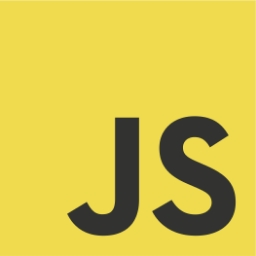
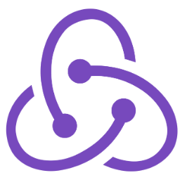

Front-End React Developer
Hi, I'm Ja'diger Turganbaev. A passionate Front-end React Developer based in Nukus, Karakalpakstan. üìç

Tech Stack
- 
- 
Hi, I'm Ja'diger Turganbaev. A passionate Front-end React Developer based in Nukus, Karakalpakstan. üìç
I am a self-directed front-end developer and have been working in this field for over 6 months. I lovethe details and most of my working life has been dedicated to creating amazing websites for clients. In addition, I received acertificate of Frontend Development from TechnoPos It School (Nukus, Karakalpakstan) in 2023.